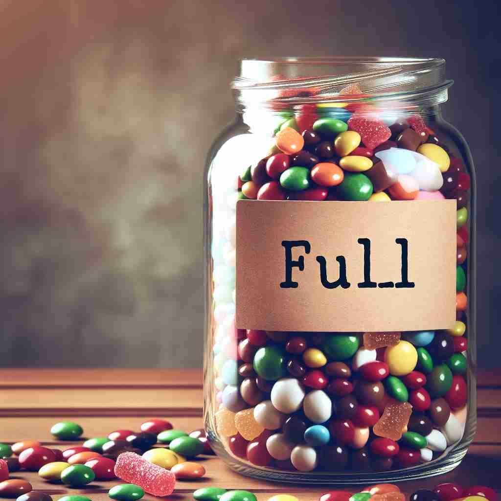
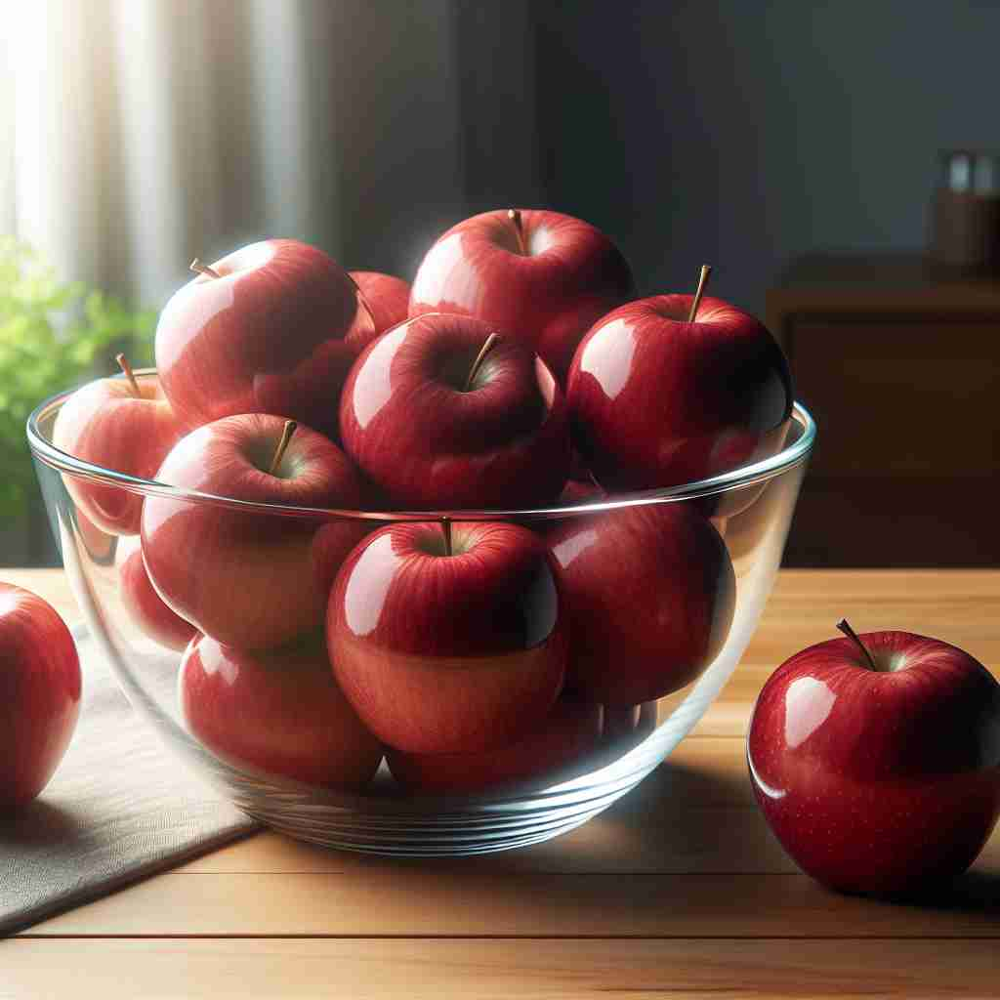

💬 The pitcher is pouring into a full glass of water.

💬 The full parking lot made it hard to find a place to park.

💬 The jar is full of candies.

💬 The bowl is full of apples.
🔈 [fʊl]
🗝️ adj. containing or holding as much as possible; having no empty space
🖼️ 在一个热闹的餐馆里，服务员微笑着给顾客倒满一杯水，直至水杯达到杯口边缘，没有一丝空隙，展现了'full'意味盛满至极。
🔍 想象一个容器被完全装满，这就是'full'的核心含义。从这个形象出发，我们可以理解'full'在不同语境下的衍生含义：无论是报告的完整性，餐后的饱足感，月亮的圆满，还是程度的极致，都源于这个'被填满'的概念。记住这个核心图像，你就能轻松掌握'full'的多重用法。
💬 The pitcher is pouring into a full glass of water.
💬 The full parking lot made it hard to find a place to park.
💬 The jar is full of candies.
💬 The bowl is full of apples.
🌳 基本词没有词根词缀构成，表示 '满的，完全的'。
💡 可以通过联想 'full' 和理解 '装满' 的形象来记忆，想象一个盛满水的杯子，代表 '满的' 概念。
🗝️ adj. complete; not lacking or omitting anything
🖼️ 在一个安静的图书馆里，学生们正在打开最新的百科全书，发现里面涵盖了所有领域的信息，没有遗漏任何部分，展示了'full'表示完整无缺。
💬 Please give me a full report of the incident.
❓ 从"没有空间"引申为"没有遗漏"
🗝️ adj. having eaten to satisfaction
🖼️ 在一个温馨的家庭晚餐后，小女孩拍着自己的肚子，满足地对妈妈说：'我吃得很饱！'这一刻呈现了'full'作为吃饱的感觉。
💬 I'm so full after that big meal.
❓ stomach被食物"填满"的状态
🗝️ n. maximum or entire amount
🖼️ 在一个购物中心里，一名顾客购买了一个礼品卡，她兴奋地看到卡上标注了满满的100美元额度，代表着这个卡的'maximum or entire amount'。
💬 The moon was at its full last night.
❓ 从"满"的状态引申为"全部"
🗝️ adv. to the greatest degree or extent
🖼️ 在一个音乐会现场，乐队的音响调试到了最大音量，震撼的音乐让观众们感受到极致的'full'声效。
💬 The door was full open.
❓ 从"满"的状态引申为"完全地"
🗝️ adj. having a large amount of something
🖼️ 在一个丰富多彩的果园里，树上挂满了成熟的苹果，让人感受到果园的丰饶和果实的'full'。
💬 Her speech was full of interesting ideas.
❓ 从"装满"引申为"富含"
🗝️ adj. of maximum size
🖼️ 在一次时尚秀上，模特展示了一件饱满蓬松的秋季大衣，充分表现了'full'作为最大尺寸的含义。
💬 He has a full beard.
❓ 从"满"引申为"最大的"